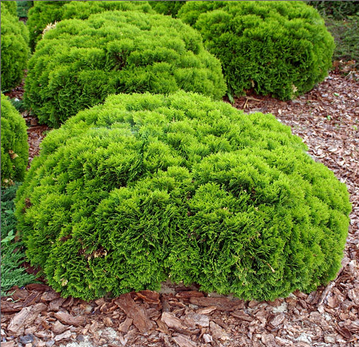
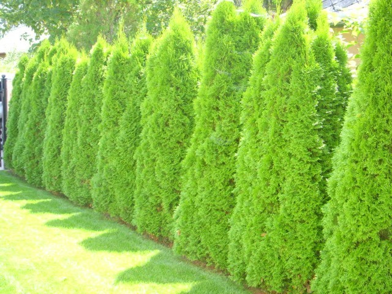
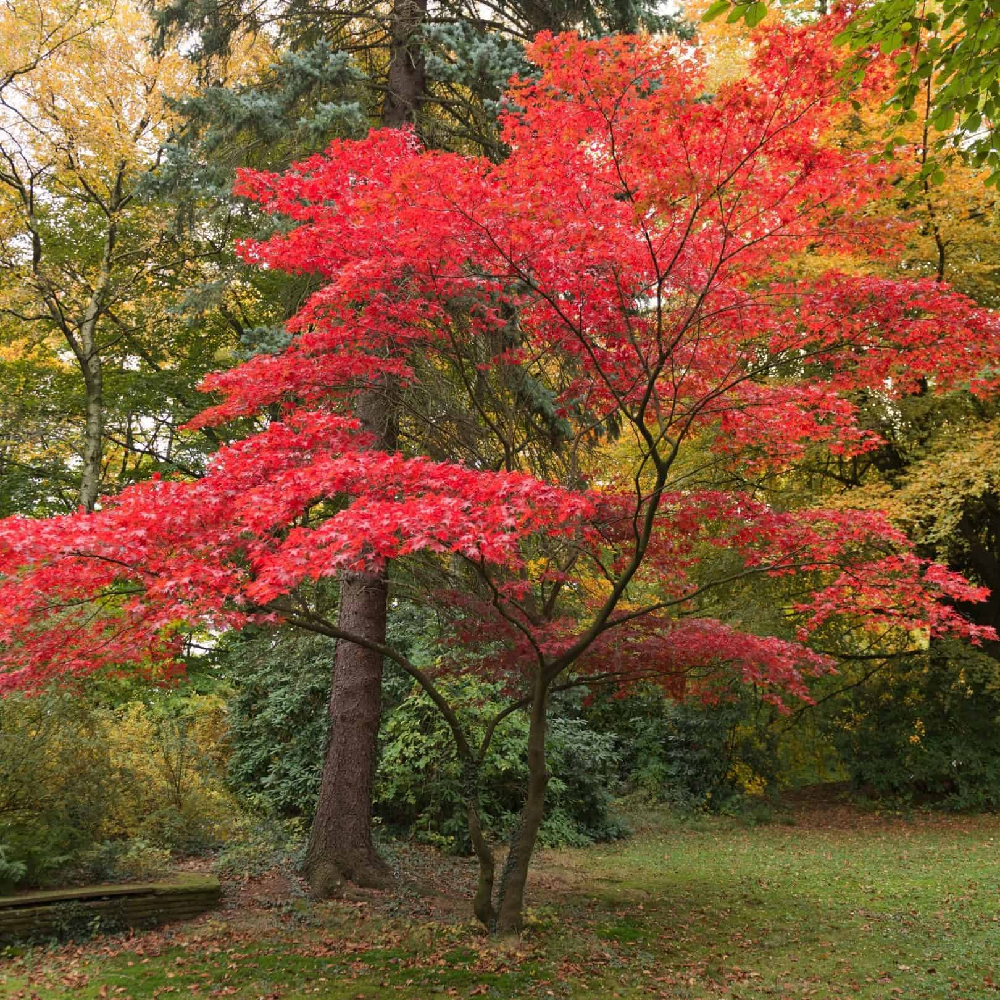
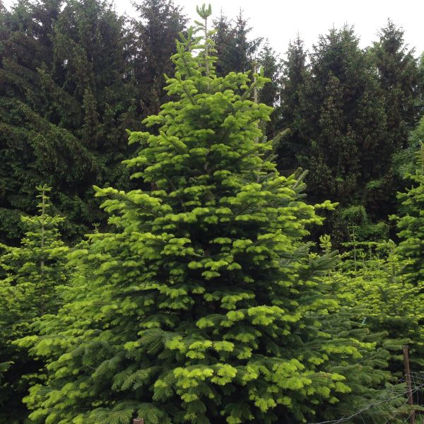
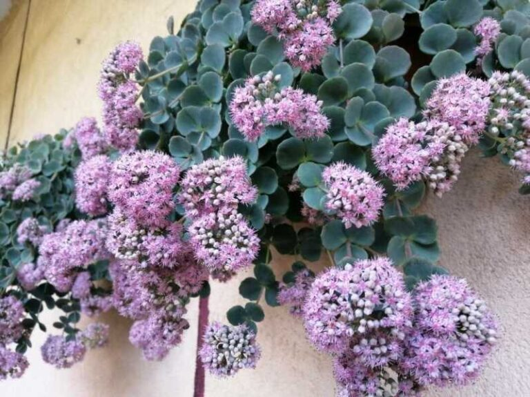
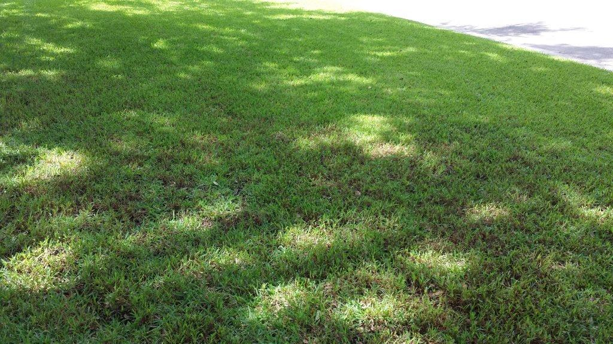
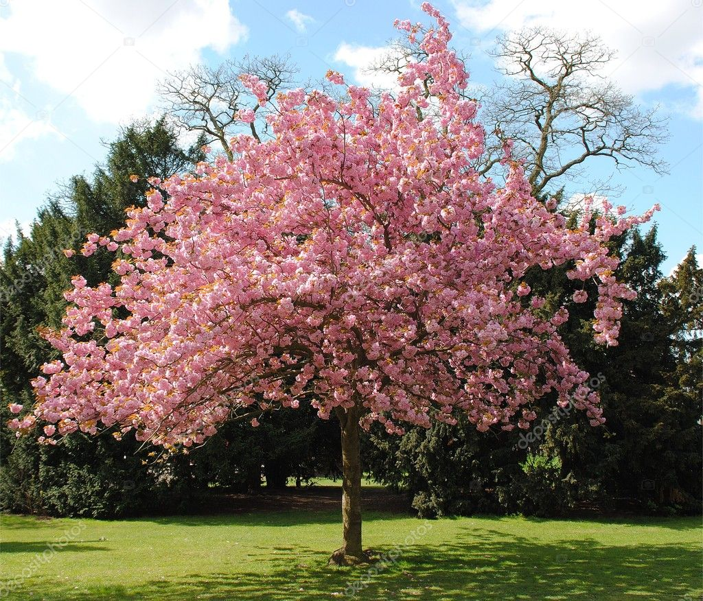
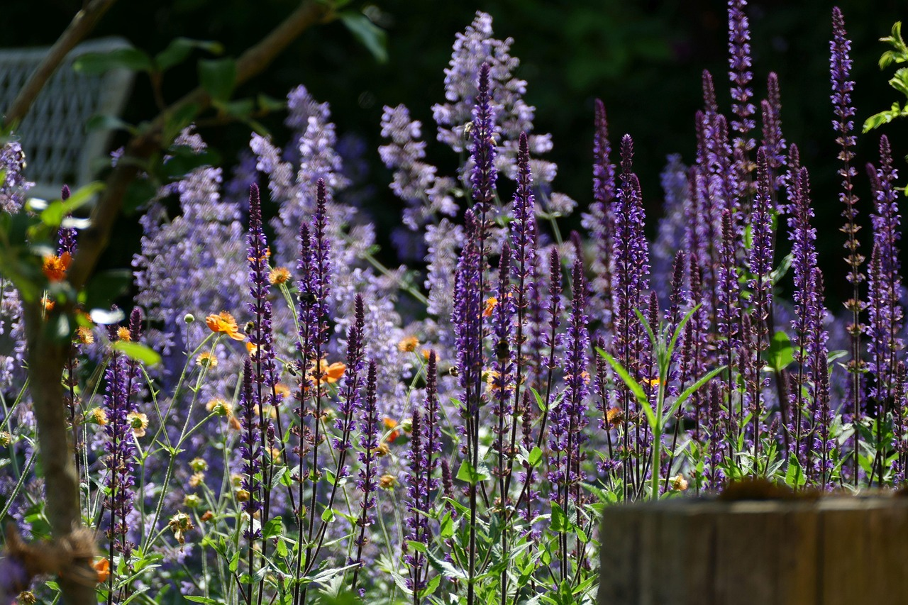
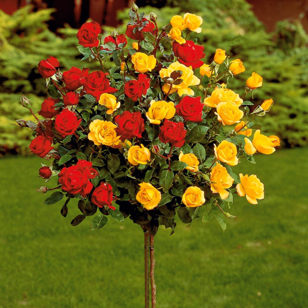

Díszkertek - Katalógus
Inspiráció, térkő, növények és kertélmény – egy katalógusban.
🌼 Szalmagyopár – Helichrysum italicum

Szegélynövénynek kiváló, alacsony növésű virág, árnyékos helyekre is alkalmas.
- 🌳 Árnyéktűrő
- 🌱 Alacsony növésű
🌲 Gömb tuja – Thuja occidentalis 'Danica'
Alacsony növésű, kompakt örökzöld, ideális szegélyekhez és cserjefoltba.
- 🌱 Alacsony növésű
- 🌿 Örökzöld
🌳 Nyírfácska – Betula pendula
Díszes kérgű, légies lombú fa, napos kertrészekbe.
- 🌞 Napfénykedvelő
🌲 Oszlopos tuja – Thuja occidentalis 'Columna'
Magas, keskeny növekedésű tuja, árnyéktűrő és térelválasztásra ideális.
- 🌳 Árnyéktűrő
- 🌿 Örökzöld
🌳 Japán juhar – Acer palmatum
Színes lombú, alacsony termetű díszfa, jól tűri az árnyékot.
- 🌳 Árnyéktűrő
🌲 Smaragd tuja - Thuja occidentalis 'Smaragd'

Pompás zöld lombú tuja, napos helyen gyorsan növekedik.
- 🌿 Örökzöld
- 🌞 Napfénykedvelő
🌺 Dísznapraforgó – Helianthus annuus
Feltűnő virágzatával napos kertrészeket díszít, magassága miatt háttérnövényként is jó választás.
- 🌞 Napfénykedvelő
- 🌿 Évelő
🌲 Lucfenyő – Picea abies
Klasszikus örökzöld fa, amely szeles helyekre is telepíthető.
- 🌿 Örökzöld
🌼 Talajtakaró varjúháj – Sedum spurium
Alacsony, terjedő növekedésű évelő virág, amely kiválóan takarja a talajt.
- 🌱 Alacsony növésű
- 🌿 Évelő
🌾 Árnyéktűrő gyepkeverék
Dús gyep, amely jól érzi magát kevésbé napos, árnyékos kertrészekben is.
- 🌳 Árnyéktűrő
- 🌿 Évelő
🌸 Hortenzia – Hydrangea macrophylla
Színes virágzatú évelő, amely savanyú talajban pompázik igazán, félárnyékban is jól fejlődik.
- 🌿 Évelő
- 🌥 Félárnyékos
- 💧 Vízkedvelő
🌳 Cseresznyefa – Prunus avium
Tavasszal virágba borul, nyárra pedig lédús, zamatos termést hoz.
- 🍒 Gyümölcsfa
- 🌳 Lombhullató
🌿 Macskamenta (Catnip) – Nepeta cataria
A cicák kedvence, illatos levelei és virágai gyógynövényként is használhatóak.
- 🌿 Évelő
- 🩺 Gyógynövény
🌲 Buxus - Buxus sempervirens
.jpg)
Tömör lombja miatt ideális alacsony sövénynek, jól formázható.
- 🌲 Örökzöld
- ✂️ Formázható
🌼 Kereklevelű szalmagyopár – Helichrysum petiolare
Szárazságtűrő dísznövény, amely hosszan megtartja virágait és formáját.
- 🌿 Évelő
- ☀️ Napos helyre
🌹 Rózsa – Rosa spp
Klasszikus kertdísz, illatos virágai sokféle színben elérhetők.
- 🌹 Dísznövény
- 💐 Illatos
🌺 Mák (Poppy) – Papaver rhoeas

Látványos színfoltja a virágágyásnak, elbűvölő szirmokkal és könnyed habitussal.
- 🌺 Vadvirág
- 🕊 Egynyári
🧱 Prémium Antikolt Térkő

Ez a térkő megoldás ideális nagyobb udvarokhoz, természetes kőhatásával elegáns összhangot teremt a növényzettel.
- 🎨 Színek: szürke, homok, terrakotta
- ❄️ Fagyálló
- 🦶 Csúszásmentes
🌱 Gyephézagos térkő – Vitép Gaia

Masszív, vízáteresztő térkő, amely lehetővé teszi a zöldfelület megtartását parkolókban, kocsibeállóknál és kertekben.
- 🌱 Gyephézagos
- 🚗 Személyautós forgalomra
- 💧 Vízáteresztő
🪨 Travertin Classic Antikolt

Természetes mészkőből készült, bézs árnyalatú, rusztikus megjelenésű térkő, amely eleganciát sugároz kültéren és beltéren egyaránt.
- 🪨 Antikolt
- 🏡 Kültéri és beltéri
🔥 Fuego Antico

Bontott tégla hatású, mediterrán stílusú térkő, enyhén karcos felülettel és töredezett élekkel, ideális kerti utakhoz és teraszokhoz.
- 🏛 Antikolt
- 🌿 Mediterrán stílus
🍂 Mercato – Fahéj

Meleg árnyalatú, satírozott felületű térkő, amely patinás hangulatot kölcsönöz a burkolt felületeknek.
- 🍂 Antikolt
- 🚗 Személyautós forgalomra
🏰 Castello Antico Kombi

Hullámos élekkel és finoman karcolt felülettel rendelkező térkő, amely klasszikus stílusban varázsolja újjá a kültéri tereket.
- 🏛 Antikolt
- 🔀 Kombi forma
- 🌊 Hullámos szélű
🏛 Cicero

Finom felületű, antik eleganciát sugárzó térkő, amely az ókori római kertművészet hangulatát idézi.
- 🏛 Antikolt
- 🧱 Dísztégla
🪨 Terméskő burkolat – Solnhofeni mészkő

Természetes, szabálytalan formájú kőlapokból álló burkolat, amely rusztikus és időtálló megjelenést biztosít. Kültéren és beltéren is alkalmazható.
- 🪨 Terméskő
- 🏡 Kültéri és beltéri
- 🪓 Hasított felület
🌳 Kertfelújítás – Előtte / Utána


Az eredeti zöldterületet rusztikus térkövekkel, virágágyással és pergolával alakítottuk át – harmonikus és könnyen karbantartható látvány.
🌳 Kertfelújítás – Előtte / Utána
.jpeg)
.jpeg)
Az eredeti zöldterületet rusztikus térkövekkel, virágágyással és pergolával alakítottuk át – harmonikus és könnyen karbantartható látvány.